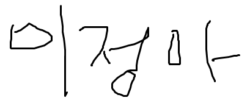

1. HTML describes the structure of a Web page -HTML은 웹 페이지의 구조를 뜻한다.
2. Browsers do not display the HTML tags, but use them to
render the content of the page -웹브라우저가 tag들을 해석해서 해석한 결과를 보여준다.
3. 웹 브라우저를 해석한다(parser를 내장) : html, htm, css, javascript
해석(render)을 해서 그 결과를 출력한다.
제목
문단태그
This is heading 1
This is heading 1
This is heading 1
This is heading 1
This is heading 1
This is heading 1
-[h6]까지만 표현이 가능하다. 제목은 보통 h3을 많이 쓴다.
This is a paragraph.
This is another paragraph.
this is a link --하이퍼링크(앵커태그)

alt는 이미지가 없을 경우에 나오는 대체글자
◆un order list - 순서를 정의하지S 않는 목록. 번호가 없다는 뜻
◆order list - 순서가 있는 목록
- coffee
- tea
- milk
안녕
방가
방가
마우스 오버하면 나오는 툴팁(도움말) = attribute라고 한다. " "안에
넣어주는 값이 나온다.
텍스트 가운데 정렬
텍스트 오른쪽 정렬
■CSS 적용하기■
-style는 css이다.
■속성 사용하기■ -속성 적용하기 위의
style을 더 많이 사용한다.
POINT
POINT